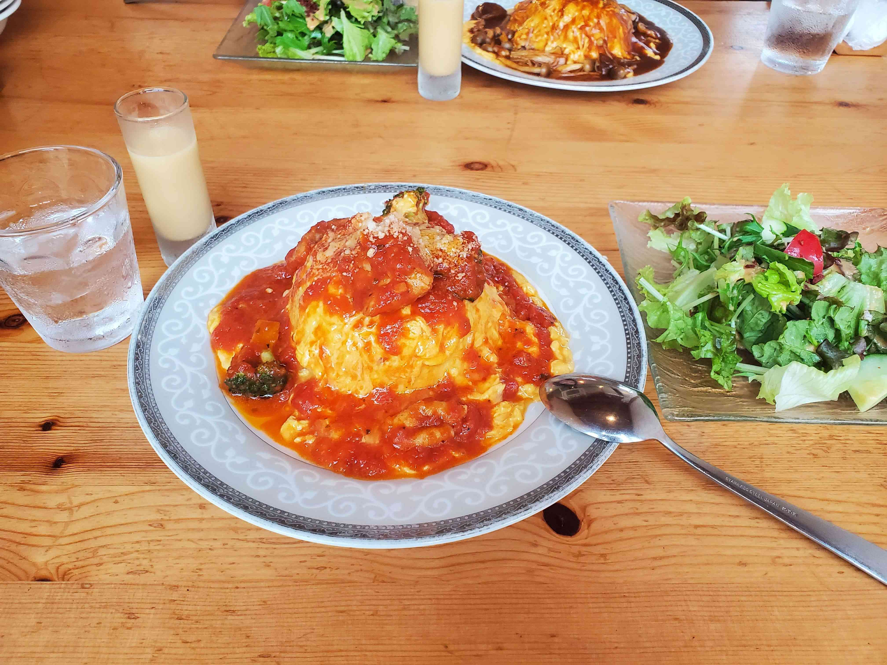

鏑木 翼（かぶらぎ つばさ）
このサイトは、私の大学での活動を紹介することを目的にHTMLとCSSを使用して制作しました。
大学では情報、経営、経済などに関連する科目を履修しました。
また、Webサイト制作ツールであるWordPressやWixを使用したWebサイトを制作しました。その際に、HTMLやCSSの基礎を学びました。
他には、画像編集ソフトのGIMPやPowerPointを使用した画像編集やポスター制作を行いました。
アルバイトは、コンビニエンスストアで約半年間、薬局で約5カ月間の経験があります。
趣味は音楽、漫画、アニメ、テニス、食べることなどです。
大学生活では、チームワークや話し合いを大切にしました。
将来について、また、私自身についても模索中ではありますが、与えられた業務はもちろんデザインやWebマーケティングを身に着け仕事に活かせるように頑張ります。そして、社会に何らかの形で貢献できればと考えております。
ご迷惑をおかけしてしまうことが多々あると思いますが、よろしくお願いします。
以下では、私が大学生活の中で取り組んできた活動を紹介しています。
ぜひご覧ください。
ゼミ
はじめに、私が所属するゼミについて簡単に紹介します。私が所属する小柏ゼミでは、インターネットや情報技術について学びました。授業は、教授に与えられた書籍・資料の輪読や学生ごとにテーマを決めてプレゼンテーションを行いました。
以下では、卒業論文の他、ゼミの仲間と取り組んだ活動が2つあるので併せて紹介します。
卒業論文
卒業研究は、日本レコード協会という組織に所属するレコード会社50社を対象に、各レコード会社のYoutube、TwitterのSNS運用について調査しました。また、音楽メディアユーザーの音楽聴取方法や音楽に対する意識の変化について調査を行いました。
まず、レコード産業とレコード協会の成り立ちは以下の通りです。
- 1877年：トーマス・エジソンが再生可能な音声記録レコードを発明
- 1887年：エミール・ベルリーナがCDやDVDの元となる円盤型レコードを発明
- 円盤型レコードの普及が進み、それをビジネスとするレコード会社が誕生していく
- 1942年：音楽産業にさらなる発展を促し音楽財産を保護するため、日本レコード協会が組織された
データにつきましては、YouTubeは各レコード会社が運用する公式チャンネルを参考に、Twitterはwhotwi（フーツイ）というWebサービスを使用して収集しました。
whotwiは、東京に本社を置く株式会社AutoScaleが運営するGoogleアナリティクスを利用したTwitterアカウントの分析ツールになります。利用するには、whotwiのホームページで分析したいアカウントのユーザーIDを入力する必要があります。
卒業研究で得られた結果について、いくつか載せています。データは2022年10月6日時点で所得したものになります。
- 音楽の聴取方法はYouTube、テレビ、定額制音楽配信サービスの順に多い
- 定額制音楽配信サービスを利用しない主な理由2つは、「お金をかけるほど音楽に興味がない」ことと「無料で音楽を聴けるサービス・アプリがある」こと
- 例外として、2012年から2013年にかけて音楽配信の売上が低下した原因は、スマートフォンの普及に伴い「着うた」及び「着うたフル」のモバイル用音楽配信の売上数が減少したため
- YouTubeは88%、Twitterは78%、Instagramは36%のレコード会社が運用している
- YouTubeとTwitterをともに運用する全てのレコード会社が、Instagramも運用している
- YouTubeチャンネル登録者は最大5,880,000人、最小174人
- Twitterのフォロワーは株式会社LDH JAPANが366,305人で最大（EXILE系）
- Twitter投稿は1社を除く全てのレコード会社が毎日行い、時間は12時と18時に集中している
苦労した点
卒業研究の中で苦労した点は、YouTubeとTwitterのSNSアカウントの情報を取得することです。調査対象であるレコード会社が50社あるため、収集するデータは少なくありませんでした。
そこで、GoogleスプレッドシートのIMPORTXMLとCONCATENATEという2つの関数を使用して、whotwiで取得できるレコード会社のTwitter情報をGoogleスプレッドシートに出力しようとしました。この際、CONCATENATE関数を使用するのは、IMPORTXML関数だけでは複数のセルに対して正しいデータを取得しGoogleスプレッドシートに出力できなかったためです。
また、私が試したところYouTubeではIMPORTXML関数で取得しなければならないXPath（取得するデータを指定するもの）が取得できなかったため、whotwiでのみこの方法を用いました。
=CONCATENATE(IMPORTXML("データを取得するWebサイトのURL","XPath"))
しかし、この方法には問題がありました。
Googleスプレッドシートに出力するデータが50個程であれば数秒で完了しましたが、データの数が増えるにつれて時間がかかってしまい、最終的には「Loading...」と表示されデータの出力が全く進みませんでした。
そのため、レコード会社の公式SNSアカウントを1社ずつ調べデータをGoogleスプレッドシートに入力するはめになり、時間がかかってしまい苦労しました。
Webサイト制作
大学のフットサル同好会の新入生向けに、Wixを用いてWebサイトを制作しました。
Webサイトを制作する上で、フットサル同好会が求めるWebサイトからズレてしまわないように、1週間おきに同好会の代表の方と対面でミーティングを行いました。
Webサイト制作の概要は以下の通りです。
- 目的：大学のフットサル同好会の新入生向けWebサイトの制作
- コンテンツ：ホームページ、部員紹介、競技説明、カレンダー、Instagram、Q&A、サイトマップのWebページをそれぞれ作成
- 進め方：1週間に1度、フットサル同好会の代表と対面でミーティングを行う
- その他：本Webサイト専用にGoogle、Wix、Instagramアカウントの作成、Webサイトを引継ぐためのマニュアルの作成
- ゴール：制作したWebサイトの引継ぎを行う
Webサイト制作では、私は主にWebページとマニュアルの作成を担当しました。以下に、作成したWebサイトとマニュアルの画像を載せています。
Webサイト一覧

マニュアル一覧
フリーマーケット
大学の文化祭で開催されるフリーマーケットに出店しました。
フリーマーケットでの出店に向けてそれぞれ担当を決めていき、私は釣銭の準備や売上の管理を担当しました。
フリーマーケット当日は、前列に興味を引く商品を並べる、値下げは最終手段といったことを意識しました。
最終的に、1万円程の売上が出ました。
その他
大学では、一般的な講義を受ける授業のほかにいくつかの課外活動に取り組んだので、2つ紹介します。それぞれ、地元の前橋の方にご協力のもと、前橋を舞台に活動しました。
前橋商店街の探索
前橋商店街を舞台に、前橋の市民活動団体の方とお店を出店している方へのインタビューや食べ歩きを行いました。前橋商店街はレトロな雰囲気を味わうことができる場所で、賀来賢人さん主演ドラマ「今日から俺は!!」の撮影で使用されたことがあります。
写真は和菓子屋のなか又で撮影したものです。
2018年にオープンしたなか又は「和む」をコンセプト
に、ふわふわのどら焼きを販売しています。
他には、前橋商店街を少し離れた場所にあるモンスーンドーナツというお店で豆腐ドーナツを食べたりしました。
活動を通して、前橋の歴史やお店、前橋商店街で生活する人を知るきっかけになりました。
小学生との野外活動
赤城山を舞台に、地元の小学生たちと木工工作や川遊び、カレー作りを行いました。
木工工作は赤城ふれあいの森（赤城森林公園）の敷地内にあるあかぎ木の家を、川遊びとカレー作りでは国立赤城青少年交流の家という施設を利用しました。
活動は、主に大学の先輩方がバス会社や外部施設の方への連絡や打ち合わせを行い、私は議事録やWordを使用してスケジュール表の作成を担当しました。
最終的に、小学生たちを保護者に無事引き渡すことができたので良かったです。